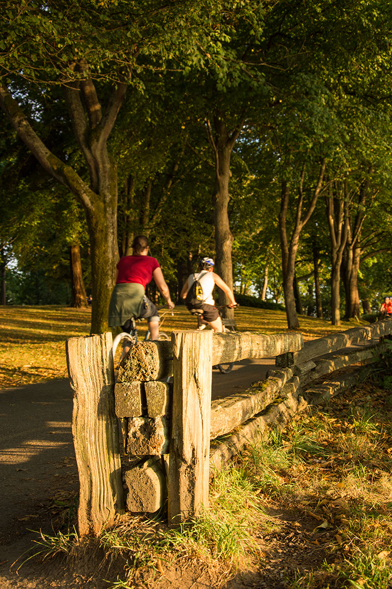

I like to combine function, strategy and fun to create effective solutions that delight the users and build connections. Good designers challenge, innovate, and redefine our way of life.
Freedom to publish and express
Being a creative professional allows me to create content, as well as enable others to publish & communicate. This upholds one of the most important civil liberties of our time.
Participate in our culture
Designers have always been a part of the social and cultural movements. Ruth Bader Ginsburg used to say "if you want to be a true professional, do something outside yourself - make things better for those who are less fortunate than you". I never doubt it.
Lifetime exploration
Design is our response to life in this ever-changing environment. New trends and technologies bring endless possibilities to this line of work. The opportunity to discover and invent keeps me happy and passionate.
Why do you work as a visual/ graphic/ UI designer?
I'm attracted to visual stimulants - color, shape, and content leave me mesmerized. A designer creates functional solutions that address the needs. This allows me to solve problems and make things better with my skills. Visual design emphasizes messaging and storytelling, with wide applications across media and platforms. Some pieces express ideas and provoke reactions, examining our culture and society. Doing this makes me feel connected to the place I live.
The significant things that designers do
A few years into working as a designer, I started to realize that the power to publish and communicate is the true reason I love this line of work. Publications in forms of web, digital and print have been helping people acquire information for centuries. Civil liberties such as the free press & expression are important mechanisms in a society with checks and balances. They are even more imperative nowadays with the rise of misinformation and propaganda campaigns.
People and teams I work with
Mostly product development and marketing. I worked with project managers, product owners, copy writers, marketing specialists, developers, QA and other creatives.
Interests
Personal finance
Photography
Food / travel
Renewable energy
Investment
Digital gadgets
Generative AI
Movies / stories
Places I lived and worked

I lived and worked in a few cities on the West Coast. Every experience is an episode of life that refreshes and energizes me. Letting life take me to places, with a touch of spontaneity, is my secret to happiness. I want to better understand the meaning of life and the significance of my own existence.
Volunteering 🙋♂️
I have volunteered for organizations that support the health & well being of minority communities and veterans, as well as civil liberties:
💉Health Initiative for Men,
🏩 Q Center, and 🗽 ACLU.
Tools, techniques and softwares
Regardless of the latest tools available, I use pencil, paper and moodboards a lot - they help me organize my thoughts and brainstorm. I design with interface based softwares such as Figma, Photoshop, Indesign and Illustrator. Markup languages like HTML/CSS enable me to prototype and explore the design. Generative AI tools give me access to information, ideas and new skills, broadening my research and ideation process.
What exactly is visual design, and what kind of projects do you do?
Like most trained designers, I have experience with screen and print based projects. Before the rise of the tech sector, there were titles like graphic / digital / communication designers for those professionals in my line of work. Nowadays there are more intricate specialities such as web / interaction / UI / UX / product design.
I have worked with a variety of designers and my observation is that there are lots of overlapped responsibilities and skills, but a visual designer primarily focuses on the interface and visual identity of a product. I also specialize in interaction and web product design.